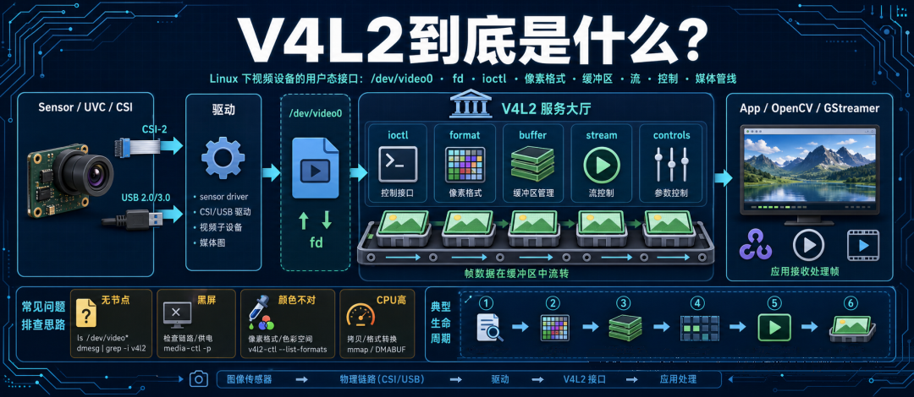
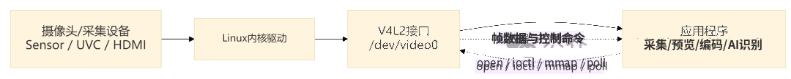
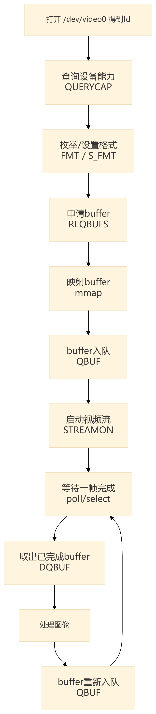
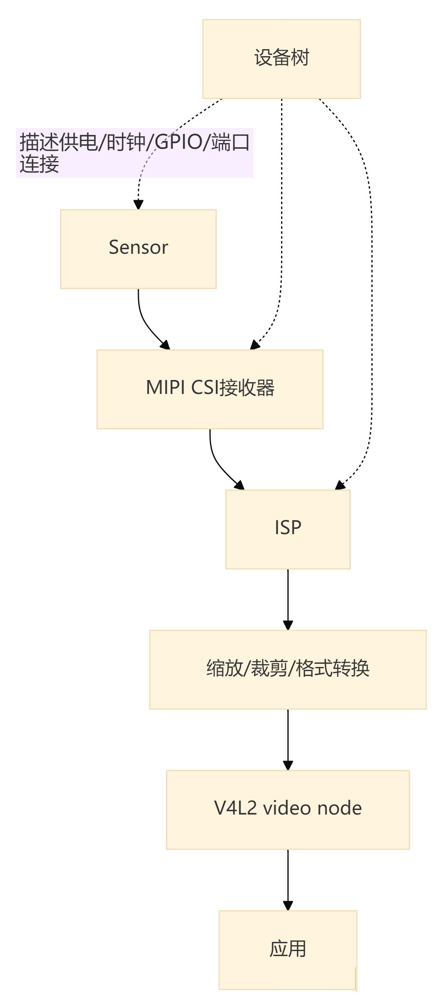
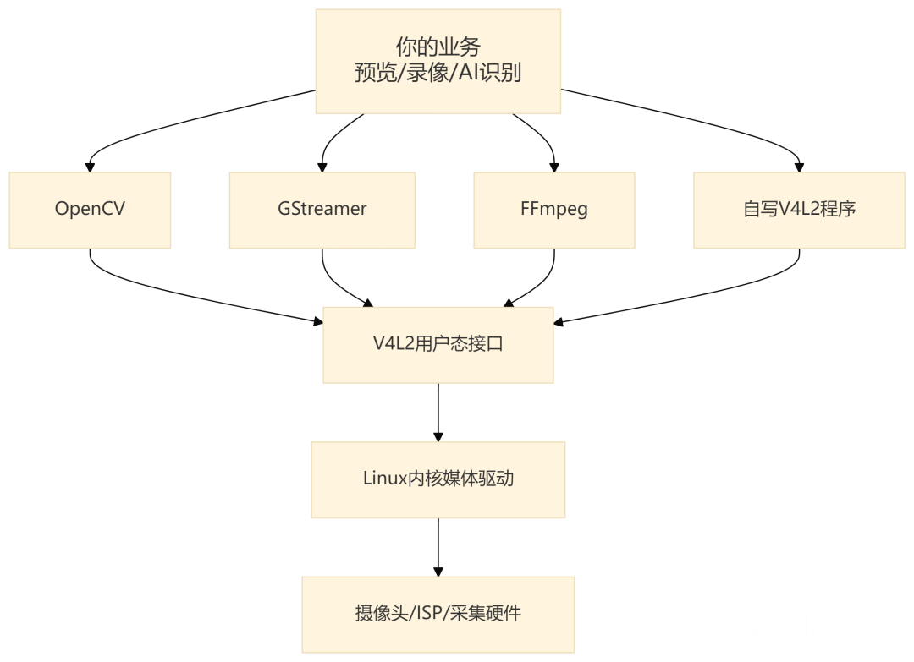

像 Linux 视频设备的办事大厅，专门管格式、buffer、控制和数据流
你有没有遇到过这种场景：USB 摄像头插上板子，/dev/video0 出来了。心想：Linux 不是”一切皆文件”吗？那我打开它，读几帧，不就能拿到图像了吗？
结果一上手才发现，事情没这么温柔：要查摄像头支持什么格式，要设置分辨率，要申请 buffer，要把 buffer 排队，要启动视频流，要等一帧回来，还要处理 YUYV、MJPEG、NV12、RAW Bayer 这些看起来像快递单号的像素格式。
更离谱的是，有时 /dev/video0 明明存在，画面就是黑的；有时 OpenCV 能打开，自己写程序就不行；有时 v4l2-ctl 能看到设备，但一采集就报错；有时 USB 摄像头很简单，换成 CSI 摄像头之后突然冒出一堆 media controller、subdev、ISP。
这时候就碰到了一个名字：V4L2。V4L2 是 Linux 视频设备的用户态接口体系。它不是某个摄像头，也不是 OpenCV，而是应用和内核视频驱动之间的一套通用规矩。

一、先别背缩写：把 V4L2 想成”视频设备办事大厅”
V4L2 全称是 Video for Linux 2。它主要解决一个问题：Linux 上的视频设备千奇百怪，应用程序总不能每遇到一个摄像头、采集卡、编码器，就重新学一套私房话吧？所以内核媒体子系统给这些设备制定了一套比较统一的用户态接口。
应用打开 /dev/videoX，拿到 fd，然后通过 V4L2 规定的接口去问设备：你是谁？你能采集还是输出？你支持哪些像素格式？你能跑多大分辨率和帧率？我要几个 buffer？这一帧采完了吗？曝光、增益、白平衡能不能调？

这就像一个视频设备办事大厅。USB 摄像头、CSI 摄像头、HDMI 采集卡、视频编码器，脾气都不一样。但它们只要接入 V4L2，应用就不用每次都钻进驱动里问”师傅你这个按钮往哪按”。
但这里要注意一句话：V4L2 不是图像处理库，它主要负责把视频设备按统一方式暴露出来。它不负责帮你把人脸识别出来，也不负责把图像美颜成证件照。它更像门口的取号机、窗口和传送带：你通过它拿到帧，后面的解码、转换、识别、显示，要看你上层用 OpenCV、GStreamer、FFmpeg，还是自己写。
二、V4L2 和 /dev/video0 是什么关系
看到 /dev/video0，很多人会以为 V4L2 就是这个文件。不完全对。/dev/video0 是一个设备节点，是用户态进入某个视频设备的入口。V4L2 是围绕这个入口制定的一整套接口规则。
可以这么分：
| 名字 | 它是什么 | 类比 |
|---|---|---|
| /dev/video0 | 视频设备节点 | 办事大厅的窗口 |
| fd | 打开窗口后拿到的号码牌（你的业务号） | |
| V4L2 ioctl | 查询、设置、排队、启动等命令 | 各种表格和业务流程 |
| buffer | 存放一帧帧图像的区域 | 快递周转箱 |
| 应用程序 | 消费图像的人 | 拿货回去加工的工厂 |
所以打开设备只是第一步。你用 open("/dev/video0") 拿到 fd，就像进大厅取了号。取号以后你还得填表、选业务、交材料、等窗口叫号。V4L2 真正的工作，大多发生在后面那一串查询、设置和 buffer 流转里。
这也解释了为什么 V4L2 和上一篇的 fd 联系很紧。V4L2 的典型接口不是 fopen 得到一个 FILE *fp，而是打开设备节点得到 fd，再对这个 fd 发一堆控制命令。摄像头不是普通文本文件，不能指望 fprintf 和 fgets 把它安排得明明白白。
三、为什么摄像头不能只 read 一下
理论上，V4L2 支持简单的 read/write I/O 模式。有些设备也可以通过 read 读帧。但在真实嵌入式项目里，尤其是视频采集，事情通常没这么省心。
原因很简单：视频不是一杯水，而是一条不停跑的流水线。一帧图像可能几百 KB、几 MB，帧率一高，数据就像小区门口早高峰。你不能每来一辆车，就现场找塑料袋装一下。你得提前准备周转箱，排好队，哪个箱子装满了送给应用，应用处理完再把箱子还回去。这就是 V4L2 buffer 模型的意义。
典型采集流程大概长这样：

你会发现，V4L2 的重点不是”读一次拿一帧”这么简单，而是：先把格式谈妥；再把周转箱准备好；然后启动流水线；应用和驱动来回交接 buffer。
这个模型看着绕，但它是为了高吞吐和少拷贝。尤其在嵌入式板子上，CPU、内存带宽和缓存都不富裕，视频数据又大得很。你让每帧都来回复制几遍，系统很快就会像背着冰箱爬楼一样喘不上气。V4L2 的核心不是”读文件”，而是”管理一条连续的视频数据流”。
四、V4L2 到底管哪些事
从应用角度看，V4L2 主要管四类事。
1. 查询能力：先问窗口能办什么业务
不是每个 /dev/videoX 都能采集图像。有的可能是输出设备，有的是 metadata，有的是编码器节点，有的是复杂媒体管线里的一个出口。所以第一步通常要查询能力：
| 要问什么 | 为什么重要 |
|---|---|
| 是否支持 video capture | 不支持采集就别拿它当摄像头 |
| 是否支持 streaming | 决定能不能走 buffer 队列 |
| 支持哪些格式 | 决定后面设置什么 pixel format |
| 支持哪些分辨率/帧率 | 决定图像尺寸和性能预算 |
不先问清楚，就像去银行窗口问”能不能办离婚证”。窗口不一定错，是你业务跑偏了。
2. 设置格式：先把”菜名”和”盘子尺寸”说清楚
视频格式至少包括：
| 项 | 例子 | 影响 |
|---|---|---|
| 分辨率 | 640x480、1280x720、1920x1080 | 一帧有多大 |
| 像素格式 | YUYV、MJPEG、NV12、RGB、RAW Bayer | 数据怎么解释 |
| 帧率 | 30fps、60fps | 每秒要搬多少数据 |
| stride/bytesperline | 每行实际字节数 | 行对齐和图像显示是否正常 |
很多”画面花了””颜色不对””图像斜着跑”的问题，不是摄像头坏了，而是你把数据格式理解错了。比如摄像头给你的是 YUYV，你按 RGB 去看；传上来的是 Bayer RAW，你没有做去马赛克；每行有对齐填充，你却按紧凑图像处理。结果就像别人给你一箱火锅底料，你拿它当巧克力冲水喝，味道当然离谱。
3. 管 buffer：提前准备周转箱
V4L2 常见的采集方式有几种：
| I/O 方式 | 大致含义 | 常见感受 |
|---|---|---|
| read/write | 简单读写 | 入门容易，灵活性和性能有限 |
| mmap | 内核和用户态映射共享 buffer | 很常见，效率较好 |
| userptr | 用户提供 buffer 指针 | 要求应用更懂内存管理 |
| dmabuf | 跨设备共享 buffer | 适合零拷贝、多媒体流水线 |
嵌入式里最常见的是 mmap 和 dmabuf 这两类思路。mmap 像驱动提前准备一批周转箱，应用把这些箱子映射到自己能看到的地址空间里。驱动装满一箱，通知应用来取；应用处理完，再把箱子还给驱动继续装。
dmabuf 更像跨部门共享同一个周转箱。摄像头采集、ISP、编码器、显示控制器、NPU 如果都能围绕同一块 buffer 协作，就能少搬很多次货。这对视频预览、编码和 AI 视觉都很关键。
4. 控制参数：曝光、增益、白平衡不是玄学
摄像头不只是吐帧。它还有很多控制项：
| 控制项 | 直观含义 |
|---|---|
| exposure | 曝光时间 |
| gain | 增益 |
| white balance | 白平衡 |
| focus | 对焦 |
| brightness/contrast | 亮度和对比度 |
| test pattern | 测试图案，调试管线时很有用 |
这些通常通过 V4L2 controls 暴露出来。工具上可以先用 v4l2-ctl --all 看设备支持什么，再考虑应用里怎么调。
这部分很像调相机参数。你不能画面黑了就只怪驱动，也可能是曝光太短、增益太低、光源太暗，或者 sensor 根本没被正确上电。
五、V4L2、OpenCV、GStreamer、FFmpeg 是什么关系
很多人第一次用摄像头，是从 OpenCV 开始的：VideoCapture(0) 一调用，画面出来了。这会让人误以为 OpenCV 就是摄像头接口。
其实在 Linux 上，OpenCV 往下可能调用 V4L2 后端；GStreamer 里有 v4l2src；FFmpeg 也能通过 video4linux2 输入设备采集。它们的关系大概是这样：

这几层各管各的事：
| 层 | 适合做什么 |
|---|---|
| V4L2 | 设备能力查询、格式设置、buffer 流转、控制参数 |
| OpenCV | 图像处理、视觉算法、快速验证 |
| GStreamer | 多媒体管线、预览、编码、推流、零拷贝集成 |
| FFmpeg | 编解码、封装、录制、转码 |
| libcamera | 复杂相机管线管理，尤其是现代 SoC 相机 |
所以你可以把 V4L2 理解成地基。OpenCV 很适合快速验证算法，但它不一定暴露所有底层控制能力；GStreamer 更像多媒体流水线总管，适合把采集、转换、编码、显示串起来；FFmpeg 擅长录制、转码和封装；libcamera 则更常出现在复杂 ISP、sensor、镜头控制都需要统一管理的现代相机栈里。
如果你只是想验证 USB 摄像头有没有图，OpenCV 或 v4l2-ctl 很快。如果你在做产品，要调分辨率、格式、buffer、延迟、零拷贝和稳定性，最终还是要理解 V4L2 那套底层规矩。
六、USB 摄像头和 CSI 摄像头，为什么难度差很多
USB 摄像头通常比较省心，因为大量 USB 摄像头走 UVC 标准。驱动成熟，插上后出现 /dev/video0，格式和控制项相对容易枚举。它像一个连锁便利店，货架怎么摆、收银怎么扫，规矩比较统一。
CSI 摄像头就不一定了。很多 SoC 相机链路长这样：

这时候一个摄像头不工作，可能不是 /dev/video0 自己的问题，而是：
- sensor 没上电；
- reset GPIO 方向错；
- MIPI lane 数配置错；
- 时钟频率不对；
- media graph 连接没配好；
- ISP 输入输出格式没协商对；
- /dev/video0 只是最终出口，前面 subdev 还没设置。
这就像不是一个窗口办事，而是一串部门盖章。最后窗口没出证，不一定是窗口工作人员偷懒，可能是上游某个章根本没盖。
所以调复杂摄像头时，经常还会用到 media-ctl、子设备节点、设备树和驱动日志。V4L2 仍然在其中，但你面对的是完整 media pipeline，而不是一个孤零零的摄像头文件。USB 摄像头像标准外设，CSI 摄像头像一条由 sensor、CSI、ISP 和驱动拼起来的生产线。
七、常见翻车现场：先按这张表排
V4L2 问题很容易让人一头扎进驱动代码。动代码之前，先把现象分类。
| 现象 | 常见原因 | 优先检查 |
|---|---|---|
| 没有 /dev/video0 | 驱动没加载、设备树没生效、硬件未识别 | dmesg、设备树、总线枚举 |
| 能打开但查询能力失败 | 节点不是预期设备，或驱动实现异常 | v4l2-ctl –all |
| 设置格式失败 | 格式/分辨率/帧率不支持 | 枚举 formats 和 frame sizes |
| 一采集就卡住 | buffer 没入队、没 STREAMON、没有帧中断 | 采集流程、驱动日志 |
| 画面黑 | 曝光/增益、sensor 上电、光路、管线配置 | controls、设备树、示波器 |
| 颜色不对 | pixel format 理解错、YUV/RGB 转换错、Bayer 未处理 | format、stride、转换流程 |
| CPU 占用高 | 拷贝太多、MJPEG 软件解码、格式转换太重 | mmap/dmabuf、硬件编码/转换 |
| 设备 busy | 被其他进程占用 | lsof、服务进程、相机守护进程 |
调试工具也可以先记几个：
| 工具 | 能看什么 |
|---|---|
| v4l2-ctl –list-devices | 系统有哪些 V4L2 设备 |
| v4l2-ctl –all -d /dev/video0 | 能力、controls、当前格式 |
| v4l2-ctl –list-formats-ext | 支持哪些格式、分辨率、帧率 |
| media-ctl -p | 复杂媒体管线拓扑 |
| dmesg | 驱动 probe、格式协商、错误日志 |
| lsof /dev/video0 | 谁占用了设备 |
这里有个很实用的顺序：先确认节点是不是你以为的那个设备；再确认格式和分辨率是否支持；再确认 buffer 流程是否完整；最后才深入驱动、设备树和硬件信号。
不要一看到黑屏就重写驱动。很多黑屏问题最后只是格式没对上，或者自动曝光没开，或者上层把 YUYV 当 RGB 显示了。
八、从驱动角度看，V4L2 不是只创建一个节点
如果你以后要写或改 V4L2 驱动，可以先有个粗略印象。对驱动来说，V4L2 不是”创建 /dev/video0 就完事”。驱动通常要把设备能力、格式枚举、buffer 队列、stream on/off、controls、事件和子设备关系都实现好。
尤其在复杂 SoC 上，驱动还可能拆成几类角色：
| 角色 | 大致负责 |
|---|---|
| sensor subdev | 传感器曝光、增益、分辨率、输出格式 |
| CSI 接收器 | 接收 MIPI/并行数据，处理同步和 lane 配置 |
| ISP | 去马赛克、降噪、颜色校正、缩放等 |
| video node | 把最终帧数据交给用户态 |
| vb2 队列 | 管 buffer 申请、入队、出队和状态 |
这部分如果展开，会变成一大篇驱动开发文章。这里先抓主线：V4L2 驱动的价值，是把硬件差异收进内核，把统一接口交给用户态。应用不应该知道每颗 sensor 的私有寄存器细节；驱动也不应该把用户态逼到每帧都手忙脚乱。中间这套标准接口，就是 V4L2 存在的意义。
九、最后总结一下
V4L2 是 Linux 视频设备的用户态接口体系。它让应用可以用相对统一的方式访问摄像头、采集卡、视频输出和一些编解码相关设备。
它和普通文件的区别在于，视频设备不是静静躺在磁盘上的文本，而是一条持续产生数据的流水线。你不只是打开它，还要查询能力、设置格式、申请 buffer、映射内存、启动视频流、取帧、还 buffer，有时还要管理曝光、增益、白平衡和复杂媒体管线。
一句话：V4L2 不是”摄像头文件”，而是 Linux 给视频设备准备的一套办事流程。/dev/video0 只是窗口，fd 只是号码牌，真正的业务在格式协商、buffer 队列和数据流控制里。
如果你只做算法验证，可以先用 OpenCV 或 GStreamer 快速跑通；如果你做嵌入式 Linux 产品，迟早要看懂 V4L2。因为画面能不能稳定出来、延迟能不能压下去、CPU 能不能扛住，很多答案都藏在这条视频流水线里。